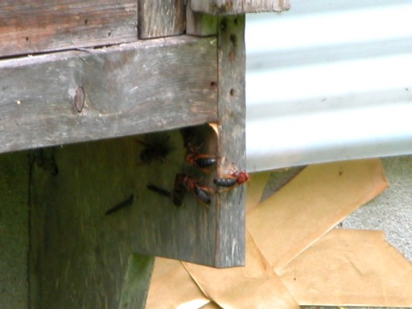
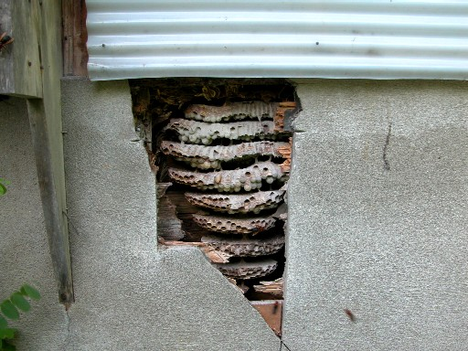
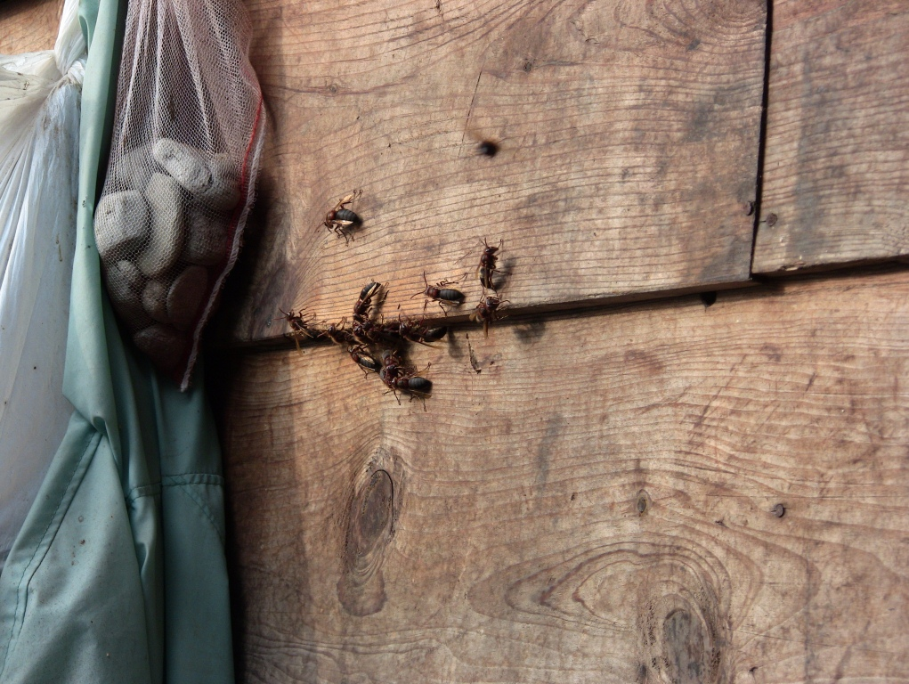
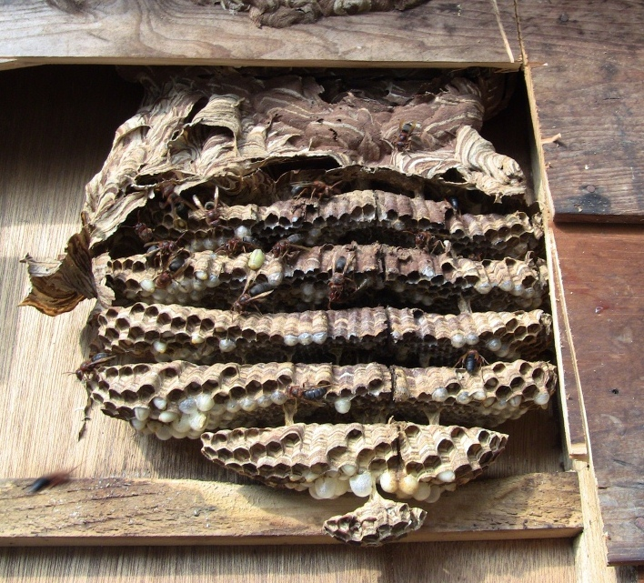

チャイロスズメバチ
（Vespa dybowskii Andre）
・色は赤茶色っぽく、腹部には縞々模様はなくて黒一色。
・巣の場所は木の中、屋根裏、壁の中など閉鎖空間に作られる。
・キイロスズメバチやモンスズメバチの巣を女王蜂が乗っ取るので、営巣初期には2種類のスズメバチが仲良く同じ巣で暮らしている。
スズメバチの中では一番変わったスズメバチかもしれません。なんとこのチャイロスズメバチは、キイロスズメバチあるいはモンスズメバチに寄生してしまうんです。
どういうことかといいますと、越冬したキイロスズメバチ（もしくはモンスズメバチ）の女王蜂が巣作りを開始しますと、後からこのチャイロスズメバチの女王蜂はこの作りかけの巣にやってきて、持ち主であるキイロスズメバチ（もしくはモンスズメバチ）の女王蜂を刺し殺します。
そして、その作りかけの巣をまるごとのっとってしまうんです。
その後、生まれてきたキイロスズメバチ（もしくはモンスズメバチ）をあたかも自分が生んだ働き蜂かのように従え、自分の卵を産み、巣作りを行っていきます。
そんなわけで、しばらくするとキイロスズメバチ（もしくはモンスズメバチ）の働き蜂とチャイロスズメバチの働き蜂が入り混じったなんとも奇妙な巣になってしまいます。
これはチャイロスズメバチによる『社会寄生』と呼ばれています。
チャイロスズメバチは、１から巣作りをせずに初期の負担を負わないという戦略を持っていたんです。
もちろん、寄生先の女王蜂に勝たなければならないというリスクはありますが、それ以上に１から巣作りをしなくて済む、という利点の方が大きかったのだろうと考えられます。
しかし、キイロスズメバチの巣の駆除の際に、この巣の付近にチャイロスズメバチの女王蜂の死骸が落ちているのを見かけたことがあります。おそらく巣をのっとる際に、キイロスズメバチの女王蜂との戦いに敗れてしまったものと考えられます。
現実には、必ずのっとる事ができるとは限らないようで、このように巣を作ることなく、死んでしまう女王蜂もたくさんいるのではないでしょうか・・・。

出入りをするチャイロスズメバチの働き蜂
壁の中に営巣していたチャイロスズメバチチャイロスズメバチ
このチャイロスズメバチですが、女王蜂は30ｍｍ、働き蜂は17～24ｍｍほどの大きさで、さほど大きなスズメバチではなく、色も赤茶色をしており、あまり目立たないスズメバチです。
目立った特長といえば、腹部が真っ黒なこと。これはその他のスズメバチとも区別が付きやすいです。
特に女王蜂は外側の鎧（外骨格）が固く、ほかの女王蜂との戦いに備えているということも聞いたことがあります。
社会寄生というかなり変わった生活史から、多くの地域で見つかってはいますが、絶対的な数は少ないようです。
チャイロスズメバチの女王蜂は他のスズメバチと比べ、越冬からの目覚めは遅く、5～7月です。これは他の女王蜂が巣づくりを開始してから活動するからです。
その後、働き蜂を生産し、9月から10月には女王蜂や雄蜂が生まれてきます。
チャイロスズメバチの巣はモンスズメバチのものと似ており、屋根裏、木の中、壁の中など閉鎖空間に巣を作ります。そして、コオロギやバッタなどを餌として集めます。
チャイロスズメバチの攻撃も激しく、巣に近づくと、もちろん威嚇の行動をとるのですが、群れを作って、地表の近くを左・右に振れながら威嚇します。
間近で見ると、かなりコワイのですが、刺す気まんまんな感じがまた一段とやっかいです。
チャイロスズメバチは攻撃性が高いため、一度巣を刺激してしまうと、 結構遠くまで追いかけられてしまうのでどうぞご注意ください。
刺されるとかなり痛いようで、刺された時の痛みはスズメバチの中でもトップクラスだそうです。まだ私は刺された事がありませんが。
一度くらいは刺されてもいいかな～～（ウソです・・・）。
スズメバチ属(vespa)

壁の内側に巣を作ったチャイロスズメバチ
壁の内側に巣を作ったチャイロスズメバチ-
生け捕り捕獲など

-
種類や生活史・巣の場所等

-
被害者や対策・対応等

-
すずめばちやについて